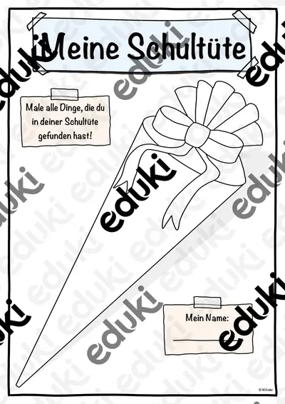
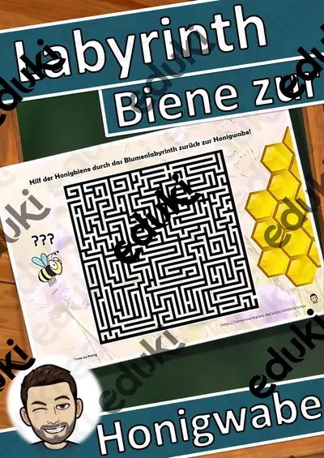

Stundenplan Bayern (Grundschule, Mittelschule, Realschule) - Stundentransparenz

Erster Schultag - Schulanfang

Mit Konflikten umgehen - Konfliktlösung (Tafelmaterial) - Konfliktlöser

Einmaleins Megasparpaket Einmaleins (wachsend)

Labyrinth: Biene zu Honig - ein Spiel auch für Zuhause

Materialpaket Muttertag, Vatertag (auch Homeschooling)

Vorlage Valentinstag

Muttertag - Homeschooling Muttertag
Keine Materialien gefunden – versuch einen anderen Suchbegriff oder Filter.